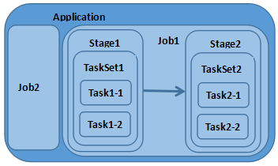

Learning Notes on Spark
Spark提供了一系列的操作RDD中的数据:
- 创建操作(Creation Operation): RDD由SparkContext通过内存数据或外部文件系统创建
- 转换操作(Transformation Operation): 将RDD通过转换操作变为另一个RDD，转换操作是lazy的(惰性), 这期间不会产生任何数据的计算. Spark提供了distinct、filter、map、flatMap、union、groupByKey等一系列的转换操作函数.
- 控制操作(Control Operation): 将RDD持久化到内存或硬盘当中，如cache将filterRDD缓存到内存.
- 行动操作(Action Operation): Spark采用了惰性计算，每一个行动操作都会触发Spark Job进行计算并返回最终的结果。行动操作有这么几类:
- 返回标量，count返回元素的个数
- 返回Scala集合，task(n)返回0到n-1组成的集合
- 写入外部存储，saveAsHadoopFile(path)存储到HDFS
Spark提供了count、top、task、saveAsHadoopFile等行动操作函数
在Spark中存在转换操作(Transformation Operation) 与 行动操作(Action Operation)两种, 而转换操作只是会从一个RDD中生成另一个RDD且是lazy的，Spark中只有行动操作(Action Operation)才会触发作业的提交，从而引发作业调度；在一个计算任务中可能会多次调用转换操作这些操作生成的RDD可能存在着依赖关系，而由于转换都是lazy所以当行动操作(Action Operation )触发时才会有真正的RDD生成，这一系列的RDD中就存在着依赖关系形成一个DAG(Directed Acyclc Graph)，在Spark中DAGScheuler是基于DAG的顶层调度模块。
Application:使用Spark编写的应用程序，通常需要提交一个或多个作业
Job:在触发RDD Action操作时产生的计算作业
Task:一个分区数据集中最小处理单元也就是真正执行作业的地方
TaskSet:由多个Task所组成没有Shuffle依赖关系的任务集
Stage:一个任务集对应的调度阶段，每个Job会被拆分成若干个Stage

Spark中最核心的概念为RDD(Resilient Distributed DataSets)中文为:弹性分布式数据集，RDD为对分布式内存对象的抽象, 它表示一个被分区不可变且能并行操作的数据集；RDD为可序列化的、可缓存到内存对RDD进行操作过后还可以存到内存中，下次操作直接把内存中RDD作为输入，避免了Hadoop MapReduce的大IO操作。
RDD为不可变的数据集，可以使用转换操作”修改”一个RDD，但这操作过后返回的是一个全新的RDD，原本RDD并没有改变
Spark所要处理的任何数据都是存储在RDD之中，目前两种方式可以生成一个RDD:
- 从RDD进行转换操作
- 使用外部存储系统创建，如:HDFS
Spark RDD只支持粗粒度的操作，对一个RDD的操作都会被作用于该RDD的所有数据；为了保证RDD的高可用性RDD通过使用Lineage(血统)记录了RDD演变流程(从其他RDD到当前RDD所做的操作)。当RDD分区数据丢失时可以通过Lineage的信息重新计算与恢复分区数据，或进行RDD的重建。
References:
1.Spark入门基础教程 错别字和不通的句子比较多，不推荐阅读
2.Spark Overview